Climate Change Technology Solutions & Clean Tech Innovations
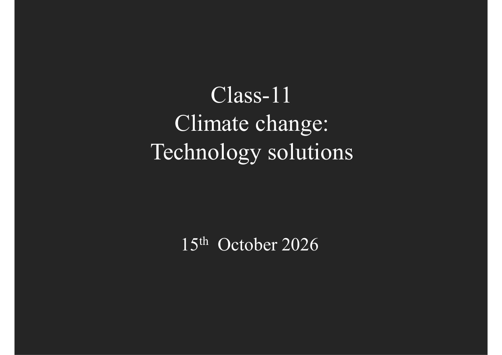
Clean Technology Solutions and Negative Emissions
- •Class-11 Climate change: Technology solutions 15th October 2026
Clean Technology Solutions and Negative Emissions: Class-11 Climate change: Technology solutions 15th October 2026. This material establishes quantitative limits, operational trade-offs, and core exam principles for Lecture 11.
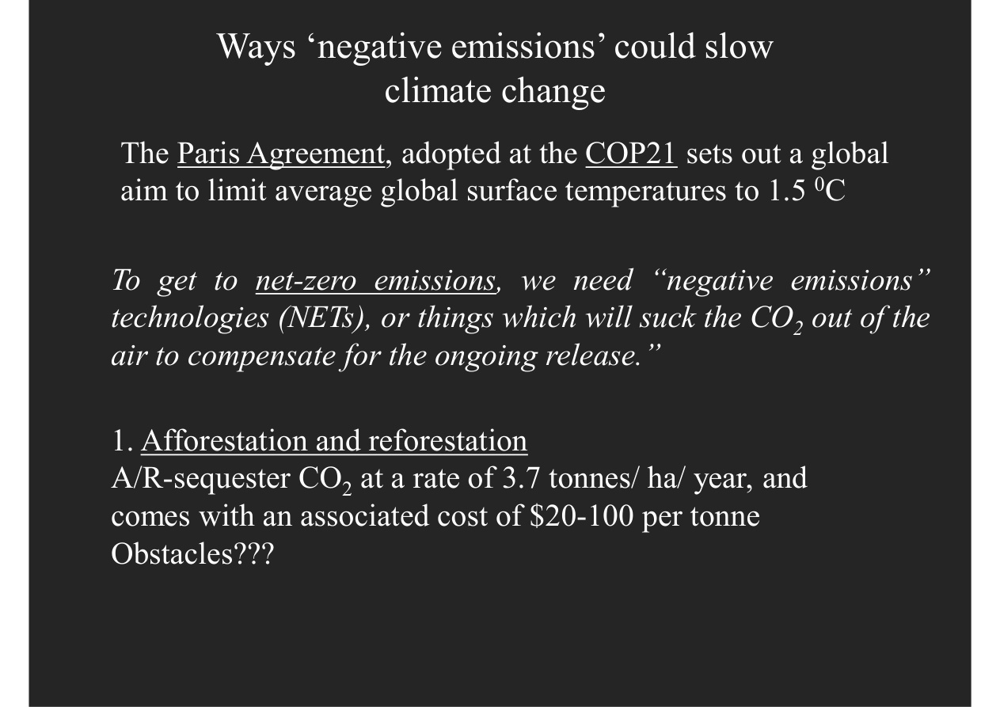
Ways ‘negative emissions’ could slow
- •Ways ‘negative emissions’ could slow climate change The Paris Agreement, adopted at the COP21 sets out a global aim to limit average global surface temperatures to 1.5 0C
Ways ‘negative emissions’ could slow: Ways ‘negative emissions’ could slow climate change The Paris Agreement, adopted at the COP21 sets out a global aim to limit average global surface temperatures to 1.5 0C. This material establishes quantitative limits, operational trade-offs, and core exam principles for Lecture 11.
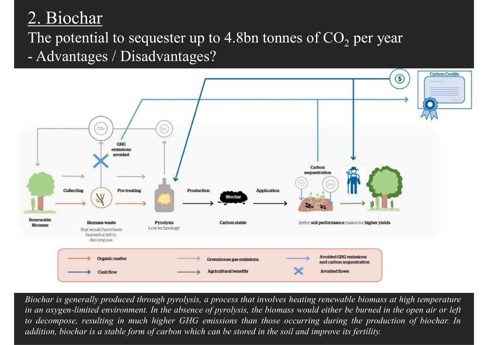
2. Biochar
- •2. Biochar The potential to sequester up to 4.8bn tonnes of CO2 per year - Advantages / Disadvantages? Biochar is generally produced through pyrolysis, a process that involves heating renewable biomass at high temperature
2. Biochar: 2. Biochar The potential to sequester up to 4.8bn tonnes of CO2 per year - Advantages / Disadvantages? Biochar is generally produced through pyrolysis, a process that involves heating renewable biomass at high temperature. This material establishes quantitative limits, operational trade-offs, and core exam principles for Lecture 11.
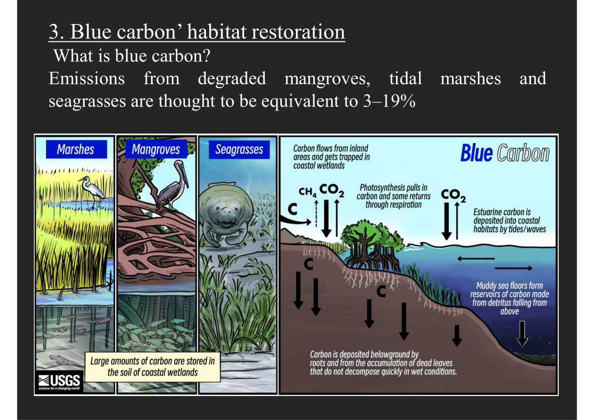
3. Blue carbon’ habitat restoration
- •3. Blue carbon’ habitat restoration What is blue carbon? Emissions from
3. Blue carbon’ habitat restoration: 3. Blue carbon’ habitat restoration What is blue carbon? Emissions from. This material establishes quantitative limits, operational trade-offs, and core exam principles for Lecture 11.
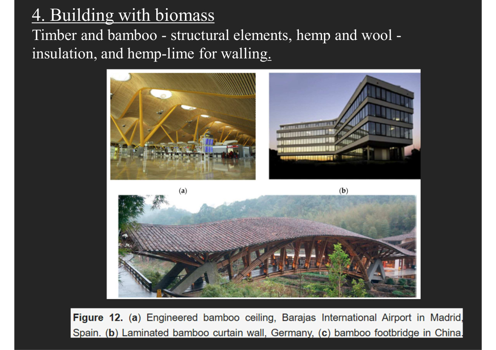
4. Building with biomass
- •4. Building with biomass Timber and bamboo - structural elements, hemp and wool - insulation, and hemp-lime for walling.
4. Building with biomass: 4. Building with biomass Timber and bamboo - structural elements, hemp and wool - insulation, and hemp-lime for walling. This material establishes quantitative limits, operational trade-offs, and core exam principles for Lecture 11.
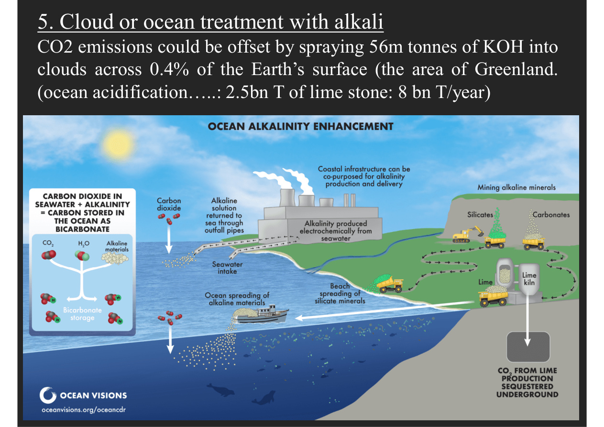
Biochar Thermochemical Pyrolysis Chemistry and Soil Stability
- •5. Cloud or ocean treatment with alkali CO2 emissions could be offset by spraying 56m tonnes of KOH into clouds across 0.4% of the Earth’s surface (the area of Greenland. (ocean acidification…..: 2.5bn T of lime stone: 8 bn T/year)
Biochar Thermochemical Pyrolysis Chemistry and Soil Stability: 5. Cloud or ocean treatment with alkali CO2 emissions could be offset by spraying 56m tonnes of KOH into clouds across 0.4% of the Earth’s surface (the area of Greenland. (ocean acidification…..: 2.5bn T of lime stone: 8 bn T/year). This material establishes quantitative limits, operational trade-offs, and core exam principles for Lecture 11.
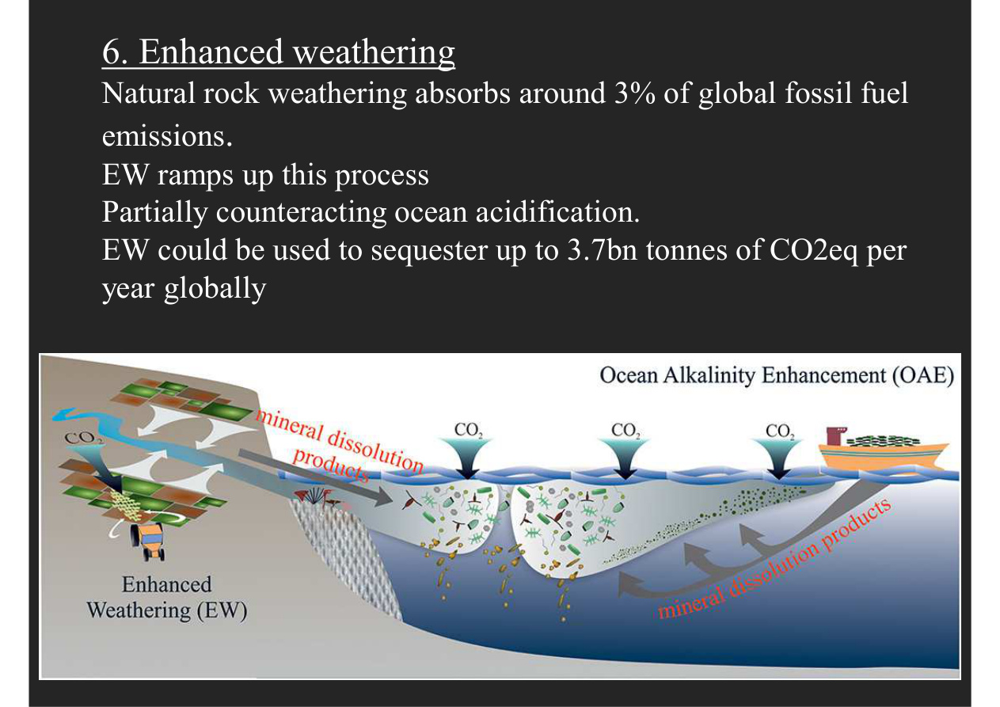
6. Enhanced weathering
- •6. Enhanced weathering Natural rock weathering absorbs around 3% of global fossil fuel emissions. EW ramps up this process
6. Enhanced weathering: 6. Enhanced weathering Natural rock weathering absorbs around 3% of global fossil fuel emissions. EW ramps up this process. This material establishes quantitative limits, operational trade-offs, and core exam principles for Lecture 11.
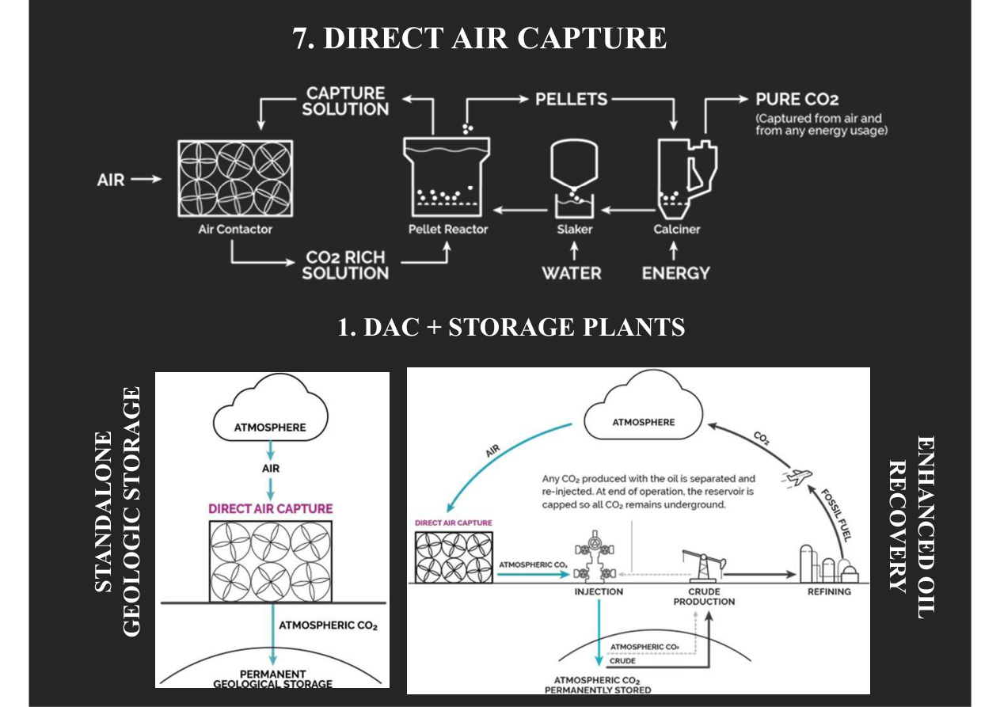
7. DIRECT AIR CAPTURE
- •7. DIRECT AIR CAPTURE 1. DAC + STORAGE PLANTS STANDALONE GEOLOGIC STORAGE
7. DIRECT AIR CAPTURE: 7. DIRECT AIR CAPTURE 1. DAC + STORAGE PLANTS STANDALONE GEOLOGIC STORAGE. This material establishes quantitative limits, operational trade-offs, and core exam principles for Lecture 11.
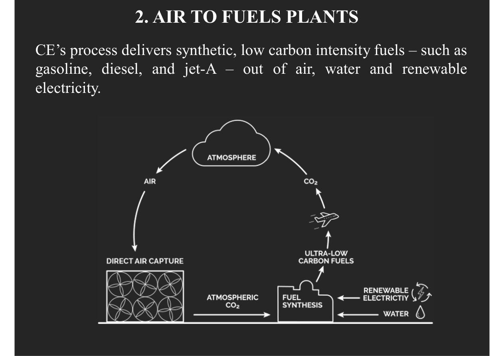
2. AIR TO FUELS PLANTS
- •2. AIR TO FUELS PLANTS CE’s process delivers synthetic, low carbon intensity fuels – such as gasoline, diesel, and jet-A – out of air, water and renewable electricity.
2. AIR TO FUELS PLANTS: 2. AIR TO FUELS PLANTS CE’s process delivers synthetic, low carbon intensity fuels – such as gasoline, diesel, and jet-A – out of air, water and renewable electricity. This material establishes quantitative limits, operational trade-offs, and core exam principles for Lecture 11.
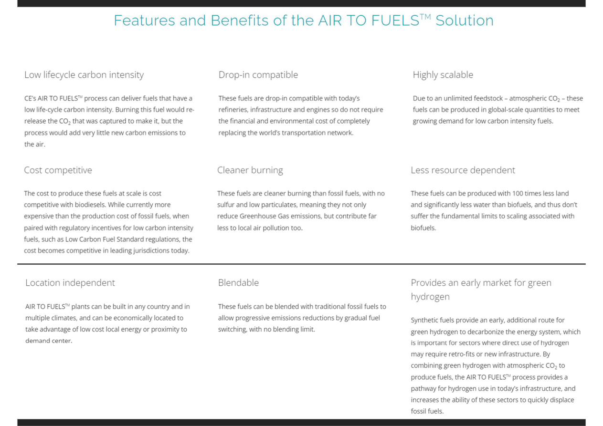
Slide 10
Visual figure slide. See the high-resolution render on the left.
Lecture 11 figure 10 illustrates key empirical observations and visual relationships in Lecture 11. It provides field data, case evidence, or system diagrams that support the quantitative and regulatory concepts taught in this topic.
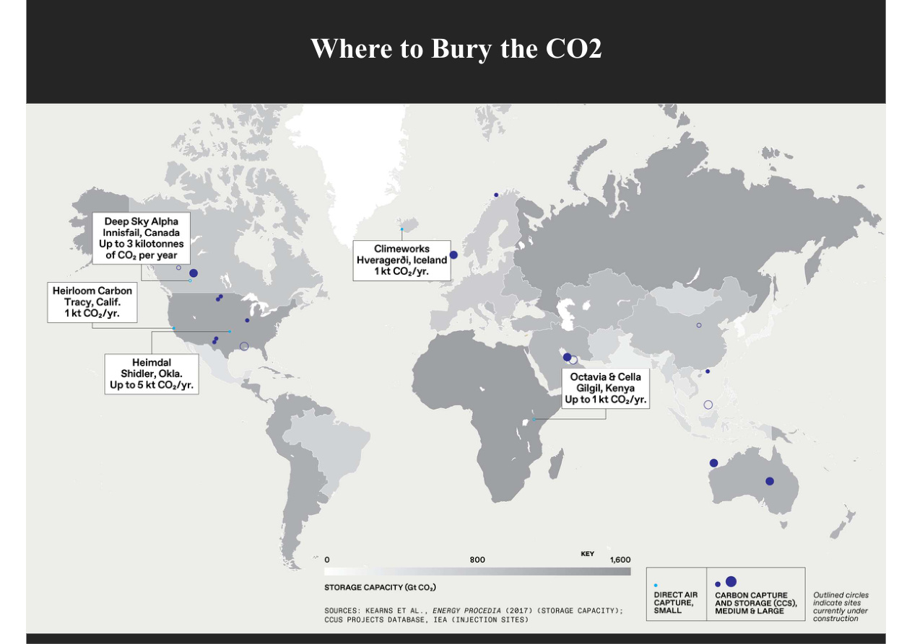
Where to Bury the CO 2
- •Where to Bury the CO 2
Where to Bury the CO 2: Where to Bury the CO 2. This material establishes quantitative limits, operational trade-offs, and core exam principles for Lecture 11.
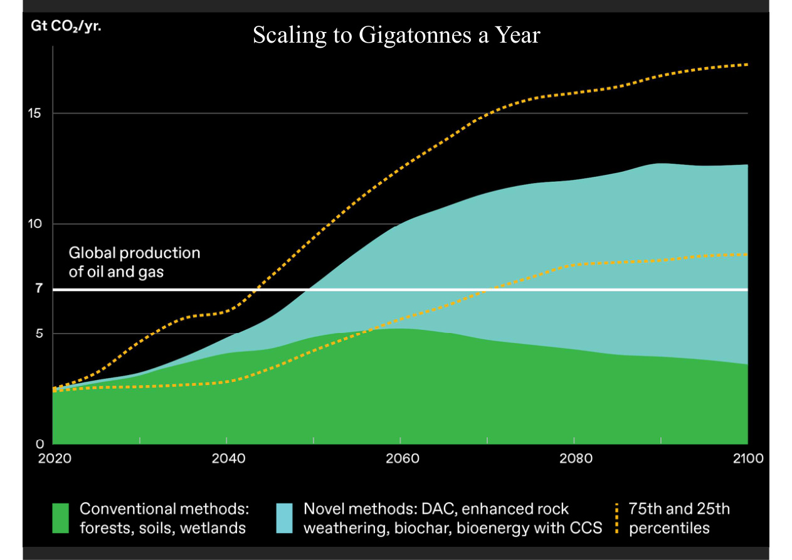
Scaling to Gigatonnes a Year
- •Scaling to Gigatonnes a Year
Scaling to Gigatonnes a Year: Scaling to Gigatonnes a Year. This material establishes quantitative limits, operational trade-offs, and core exam principles for Lecture 11.
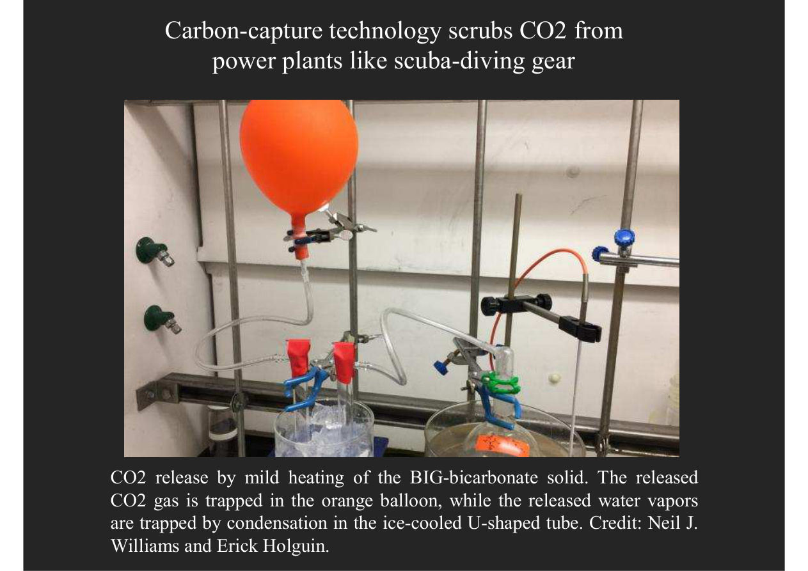
Carbon-capture technology scrubs CO2 from
- •Carbon-capture technology scrubs CO2 from power plants like scuba-diving gear CO2 release by mild heating of the BIG-bicarbonate solid. The released CO2 gas is trapped in the orange balloon, while the released water vapors
Carbon-capture technology scrubs CO2 from: Carbon-capture technology scrubs CO2 from power plants like scuba-diving gear CO2 release by mild heating of the BIG-bicarbonate solid. The released CO2 gas is trapped in the orange balloon, while the released water vapors. This material establishes quantitative limits, operational trade-offs, and core exam principles for Lecture 11.
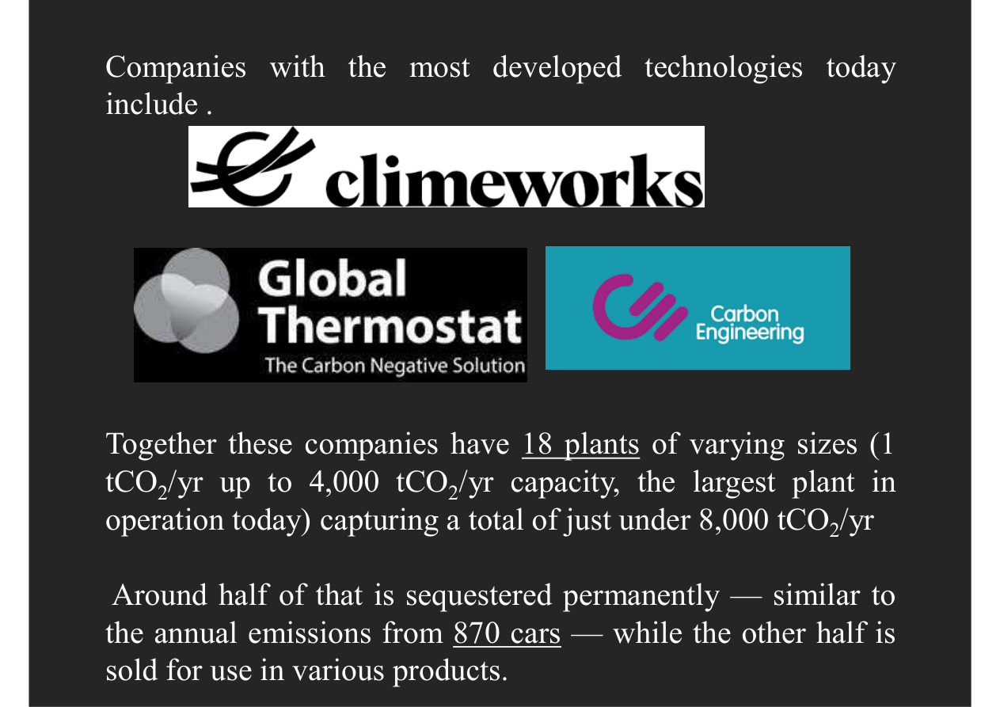
Enhanced Silicate Rock Weathering (Olivine Carbonate Cycle)
- •Companies with the most developed technologies today include . Together these companies have 18 plants of varying sizes (1 tCO2/yr up to 4,000 tCO2/yr capacity, the largest plant in
Enhanced Silicate Rock Weathering (Olivine Carbonate Cycle): Companies with the most developed technologies today include . Together these companies have 18 plants of varying sizes (1 tCO2/yr up to 4,000 tCO2/yr capacity, the largest plant in. This material establishes quantitative limits, operational trade-offs, and core exam principles for Lecture 11.
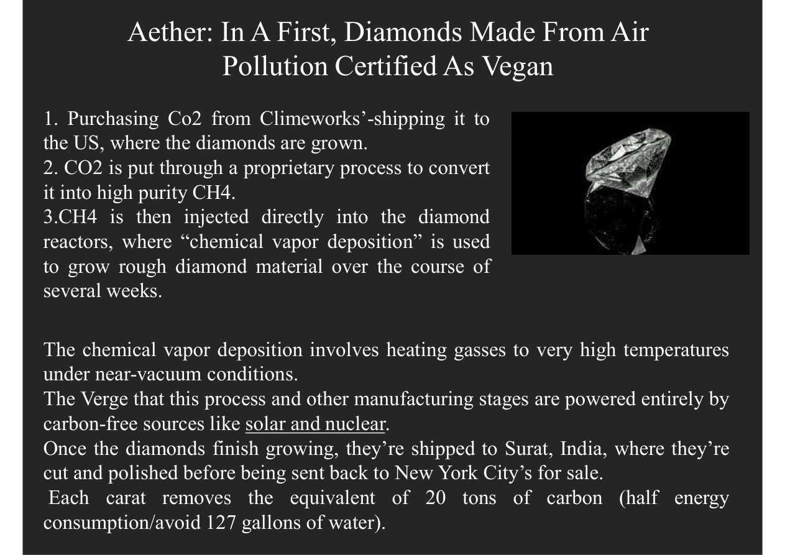
Aether: In A First, Diamonds Made From Air
- •Aether: In A First, Diamonds Made From Air Pollution Certified As Vegan 1. Purchasing Co2 from Climeworks’-shipping it to the US, where the diamonds are grown.
Aether: In A First, Diamonds Made From Air: Aether: In A First, Diamonds Made From Air Pollution Certified As Vegan 1. Purchasing Co2 from Climeworks’-shipping it to the US, where the diamonds are grown. This material establishes quantitative limits, operational trade-offs, and core exam principles for Lecture 11.
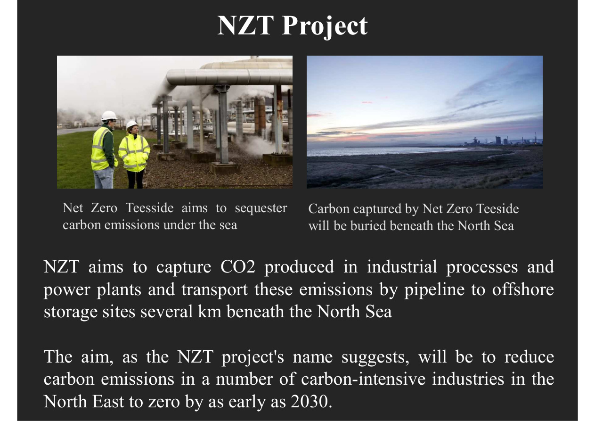
NZT Project
- •NZT Project Carbon captured by Net Zero Teeside will be buried beneath the North Sea Net Zero Teesside aims to sequester
NZT Project: NZT Project Carbon captured by Net Zero Teeside will be buried beneath the North Sea Net Zero Teesside aims to sequester. This material establishes quantitative limits, operational trade-offs, and core exam principles for Lecture 11.
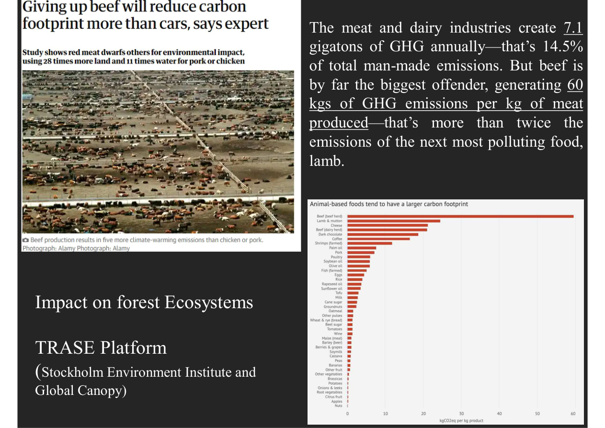
The meat and dairy industries create 7.1
- •The meat and dairy industries create 7.1 gigatons of GHG annually—that’s 14.5% of total man-made emissions. But beef is by far the biggest offender, generating 60
The meat and dairy industries create 7.1: The meat and dairy industries create 7.1 gigatons of GHG annually—that’s 14.5% of total man-made emissions. But beef is by far the biggest offender, generating 60. This material establishes quantitative limits, operational trade-offs, and core exam principles for Lecture 11.
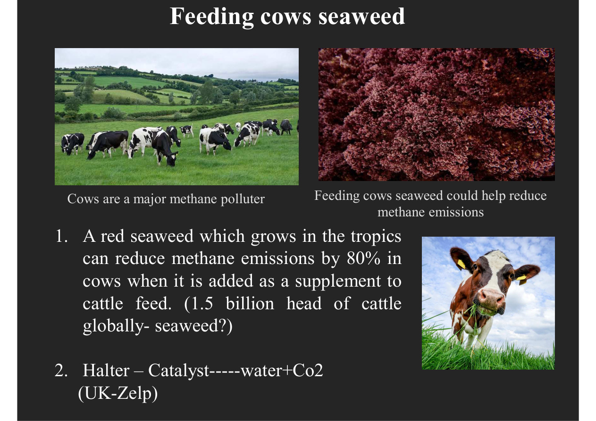
Feeding cows seaweed
- •Feeding cows seaweed Cows are a major methane polluter Feeding cows seaweed could help reduce methane emissions
Feeding cows seaweed: Feeding cows seaweed Cows are a major methane polluter Feeding cows seaweed could help reduce methane emissions. This material establishes quantitative limits, operational trade-offs, and core exam principles for Lecture 11.
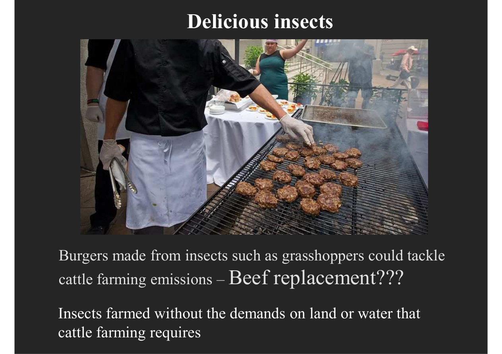
Delicious insects
- •Delicious insects Burgers made from insects such as grasshoppers could tackle cattle farming emissions – Beef replacement??? Insects farmed without the demands on land or water that
Delicious insects: Delicious insects Burgers made from insects such as grasshoppers could tackle cattle farming emissions – Beef replacement??? Insects farmed without the demands on land or water that. This material establishes quantitative limits, operational trade-offs, and core exam principles for Lecture 11.
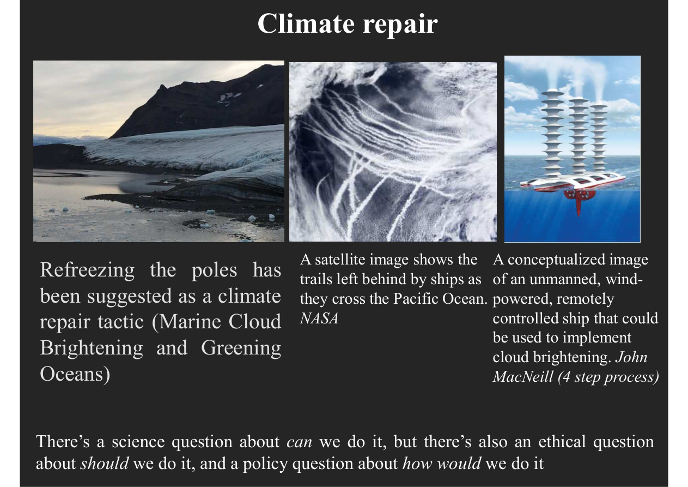
Climate repair
- •Climate repair Refreezing the poles has been suggested as a climate repair tactic (Marine Cloud
Climate repair: Climate repair Refreezing the poles has been suggested as a climate repair tactic (Marine Cloud. This material establishes quantitative limits, operational trade-offs, and core exam principles for Lecture 11.
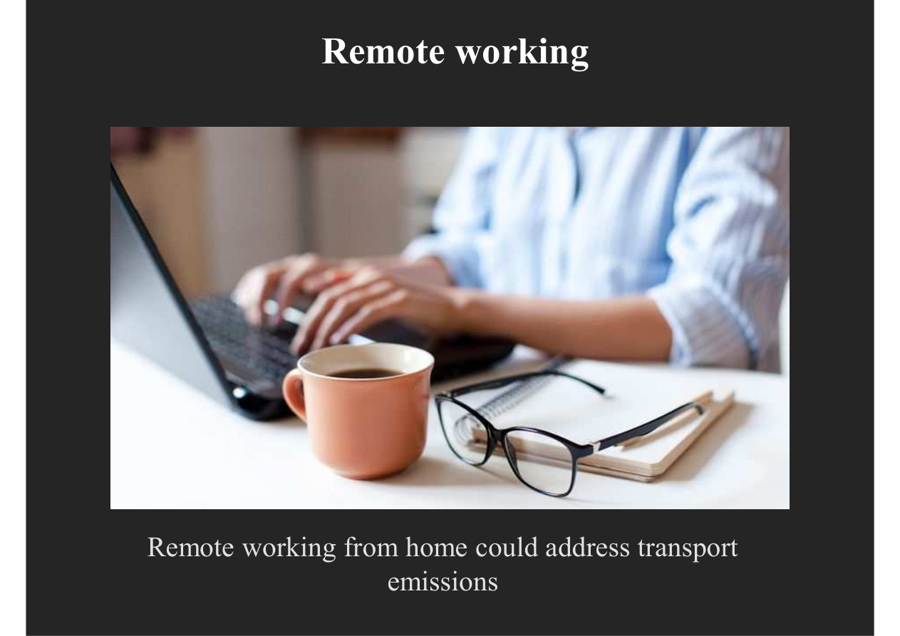
Remote working
- •Remote working Remote working from home could address transport emissions
Remote working: Remote working Remote working from home could address transport emissions. This material establishes quantitative limits, operational trade-offs, and core exam principles for Lecture 11.
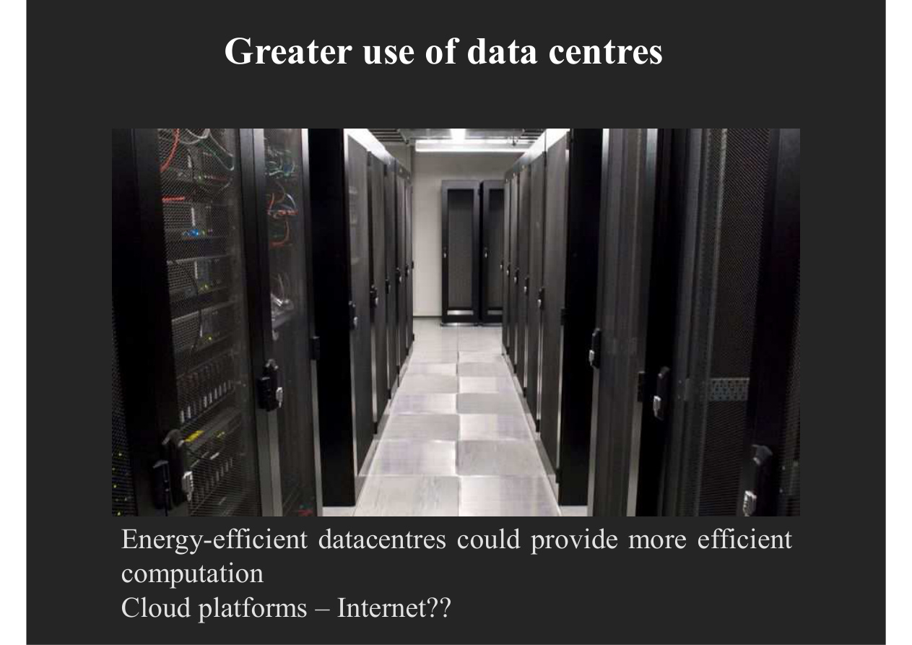
Direct Air Capture (DAC) Sorbent Thermodynamics and Costs
- •Energy-efficient datacentres could provide more efficient computation Cloud platforms – Internet?? Greater use of data centres
Direct Air Capture (DAC) Sorbent Thermodynamics and Costs: Energy-efficient datacentres could provide more efficient computation Cloud platforms – Internet?? Greater use of data centres. This material establishes quantitative limits, operational trade-offs, and core exam principles for Lecture 11.
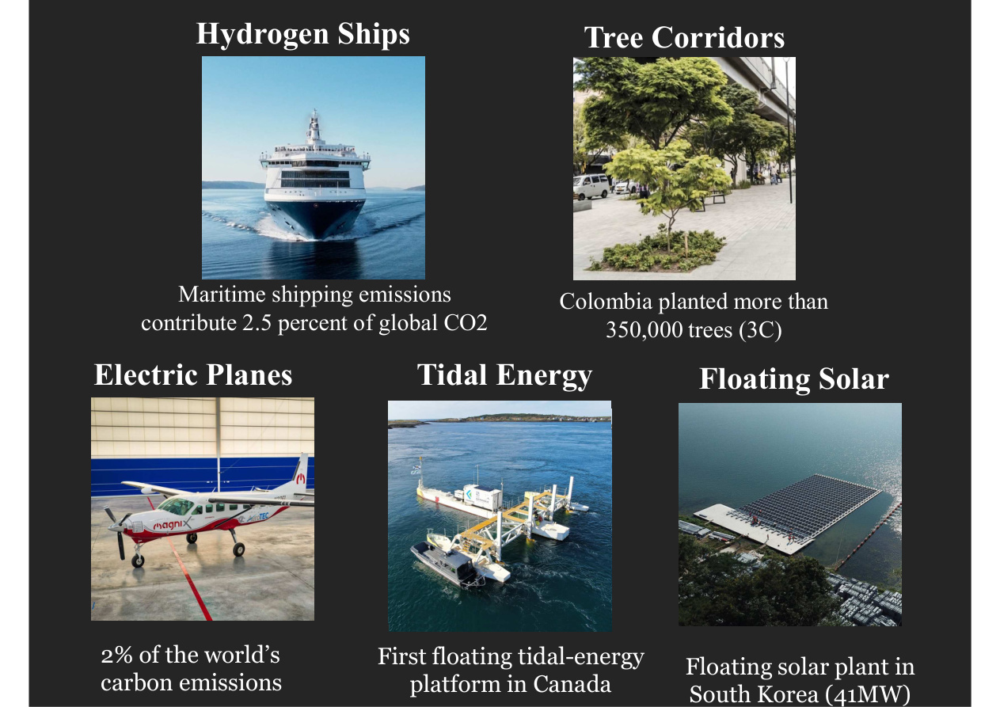
Hydrogen Ships
- •Hydrogen Ships Tree Corridors Electric Planes Floating Solar
Hydrogen Ships: Hydrogen Ships Tree Corridors Electric Planes Floating Solar. This material establishes quantitative limits, operational trade-offs, and core exam principles for Lecture 11.
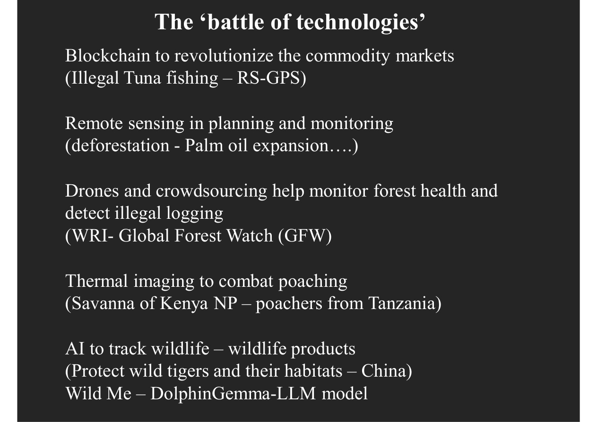
Blockchain to revolutionize the commodity markets
- •Blockchain to revolutionize the commodity markets (Illegal Tuna fishing – RS-GPS) Remote sensing in planning and monitoring (deforestation - Palm oil expansion….)
Satellite remote sensing measures reflected and emitted electromagnetic radiation across visible, near-infrared (NIR), and shortwave-infrared (SWIR) bands. Healthy green vegetation absorbs red light for photosynthesis and strongly scatters NIR light at the spongy mesophyll layer, allowing multispectral indices like NDVI to quantify plant vigor and track regional land cover change over decades.
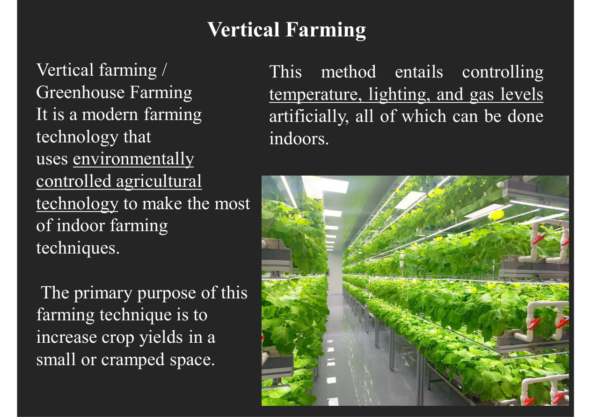
Vertical Farming
- •Vertical Farming Vertical farming / Greenhouse Farming It is a modern farming
Vertical Farming: Vertical Farming Vertical farming / Greenhouse Farming It is a modern farming. This material establishes quantitative limits, operational trade-offs, and core exam principles for Lecture 11.
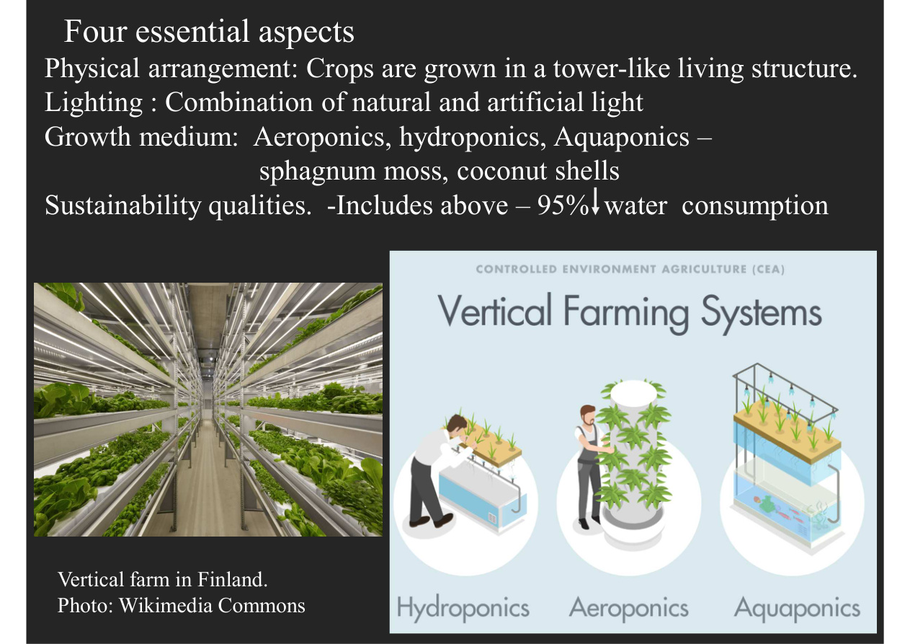
Four essential aspects
- •Four essential aspects Physical arrangement: Crops are grown in a tower-like living structure. Lighting : Combination of natural and artificial light Growth medium: Aeroponics, hydroponics, Aquaponics –
Four essential aspects: Four essential aspects Physical arrangement: Crops are grown in a tower-like living structure. Lighting : Combination of natural and artificial light Growth medium: Aeroponics, hydroponics, Aquaponics –. This material establishes quantitative limits, operational trade-offs, and core exam principles for Lecture 11.
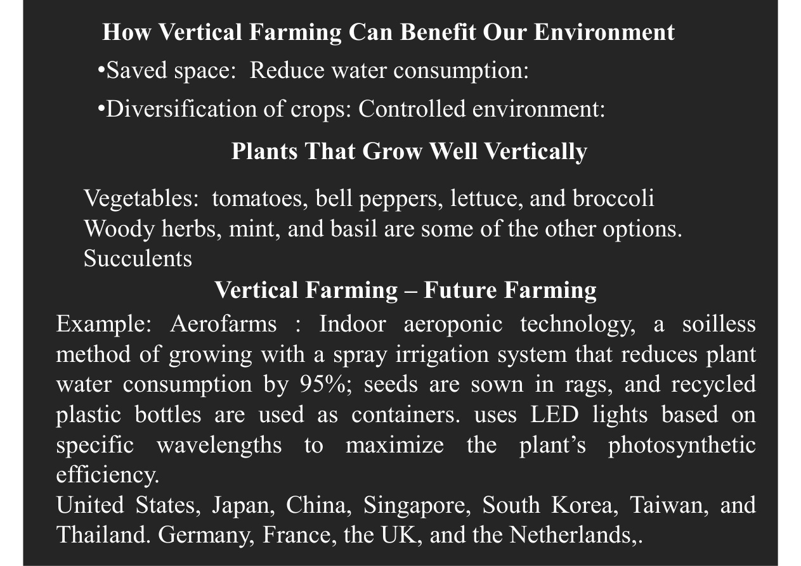
How Vertical Farming Can Benefit Our Environment
- •How Vertical Farming Can Benefit Our Environment •Saved space: Reduce water consumption: •Diversification of crops: Controlled environment: Plants That Grow Well Vertically
How Vertical Farming Can Benefit Our Environment: How Vertical Farming Can Benefit Our Environment •Saved space: Reduce water consumption: •Diversification of crops: Controlled environment: Plants That Grow Well Vertically. This material establishes quantitative limits, operational trade-offs, and core exam principles for Lecture 11.
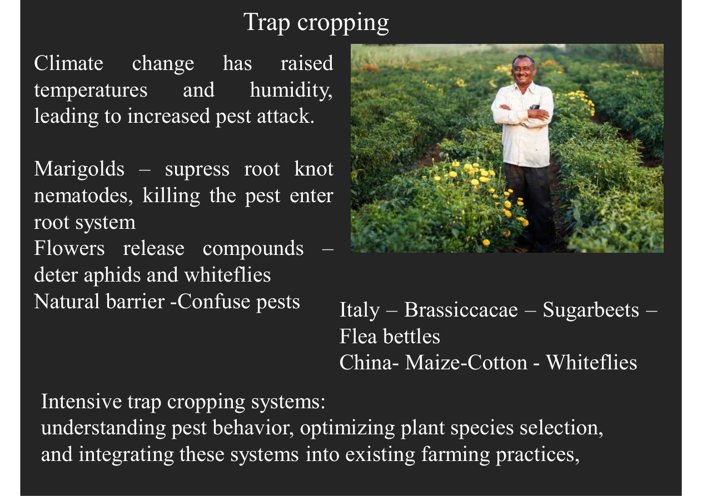
Trap cropping
- •Trap cropping Climate change has
Trap cropping: Trap cropping Climate change has. This material establishes quantitative limits, operational trade-offs, and core exam principles for Lecture 11.
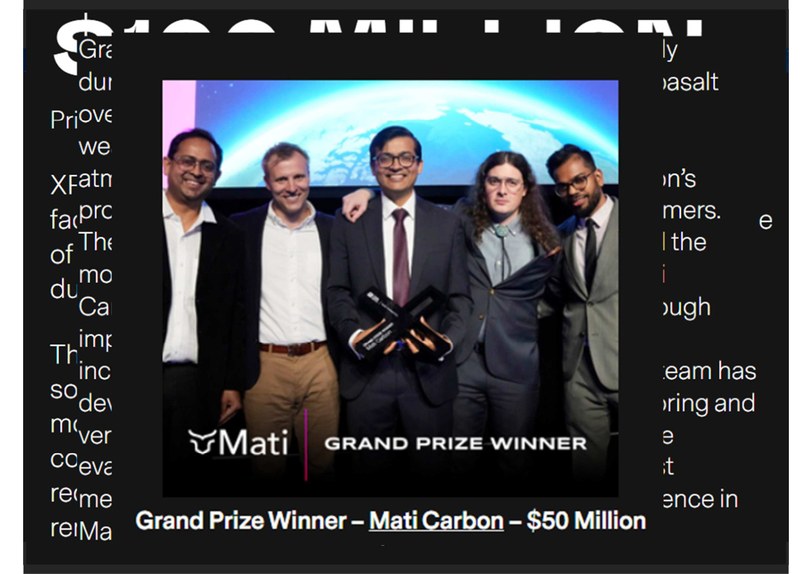
https://www.xprize.org/prizes/elonmusk
Visual figure slide. See the high-resolution render on the left.
https://www.xprize.org/prizes/elonmusk illustrates key empirical observations and visual relationships in Lecture 11. It provides field data, case evidence, or system diagrams that support the quantitative and regulatory concepts taught in this topic.
Direct Air Capture (DAC) & Clean Tech Energy Efficacy Evaluator
Compute net-carbon removal efficiency and energy penalties across solid sorbent and liquid solvent DAC systems.
Active recall flashcards
Review definitions, reactions, and governing laws from the lecture slides before flipping.
Exam traps and common pitfalls
Common student misconceptions and subtle distinctions tested in exams.
- Exam trap: Confusing Carbon Capture and Storage (CCS) with Direct Air Capture (DAC). CCS captures $CO_2$ from concentrated industrial emissions before it enters the atmosphere; DAC removes $CO_2$ that is already dispersed in ambient air.
- Exam note: Be sure to emphasize that Solar Radiation Management (SRM) does NOT solve ocean acidification, because it only masks planetary temperature without reducing atmospheric $CO_2$ concentrations.
Concept check quiz
Verify your understanding of core concepts from this lecture deck.
Slide reference gallery
Complete visual reference of all 29 slides with direct links to original presentation files.